The Sun
The Sun is the largest and most massive object in our solar system, making it the center of orbit for all other celestial bodies.
Read MoreVenus
If we look at its past, we see our present, if we look at its present, we may see our future.
Saturn
One Ring to rule them all, One Ring to find them, One Ring to bring them all and in the darkness bind them.
Neptune
When they named it, they still didn't know that this planet was also the god of winds, hosting supersonic winds.
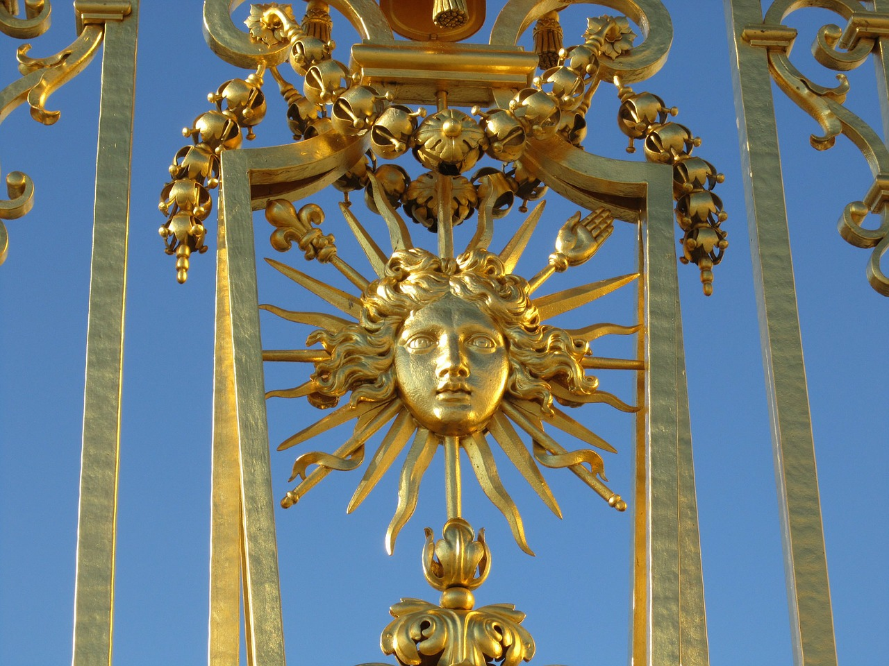
The Star of the Solar System
The Sun
The Sun is the star of the Solar System, made up of gaseous matter that gives off light and heat and around which the eight main planets
(Mercury, Venus, Earth, Mars, Jupiter, Saturn, Uranus and Neptune), the dwarf planets, the satellites and innumerable
minor bodies rotate. The mass of the Sun is almost 323,000 times larger than the Earth and its gravity is 28 times that of the Earth.
It is a giant sphere of hydrogen and helium that draws energy from the nuclear reactions that take place in its nucleus, where hydrogen atoms
fuse to form heavier atoms, like helium.
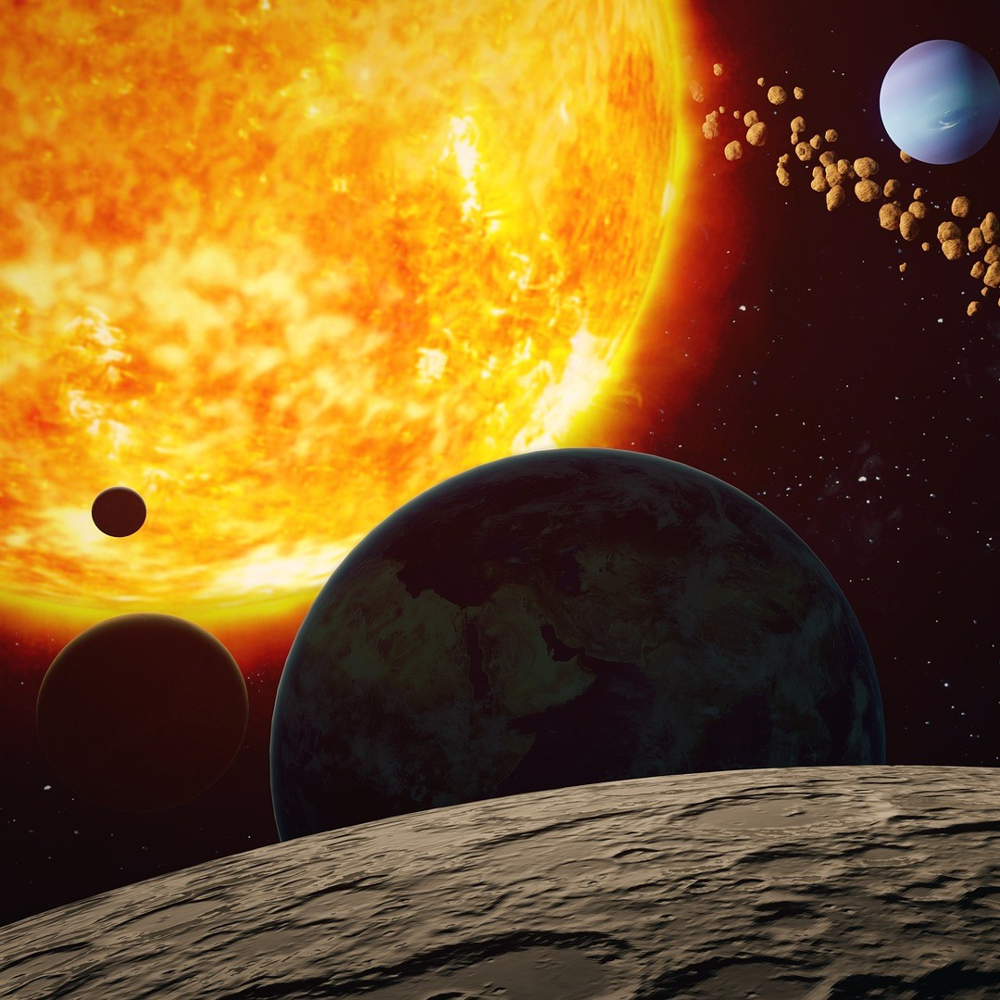
The Star of the Solar System
Characteristics
- Age
- 4.5 billion years
- Star Type
- G2 V, Yellow Dwarf
- Mass
- 1.9885×1030 kg
- Radius
- 695 700km
- Surface Temperature
- 5 500°C
- Distance from Earth
- 1 AU (≈ 150 million km)
The Messenger of the Sun
Mercury
Mercury is the smallest and closest to the Sun: its surface experiences the greatest thermal excursion among all the planets,
with temperatures in the equatorial regions reaching 427 ° C during the day and reaching -173 ° C at night.
Despite its great resemblance to the Moon, Mercury is much denser: in fact according to astronomers it is composed
of a large iron core, part of which perhaps in a liquid state, with a radius of 1,800-1,900 km, which contains about
80% of the mass of the planet.
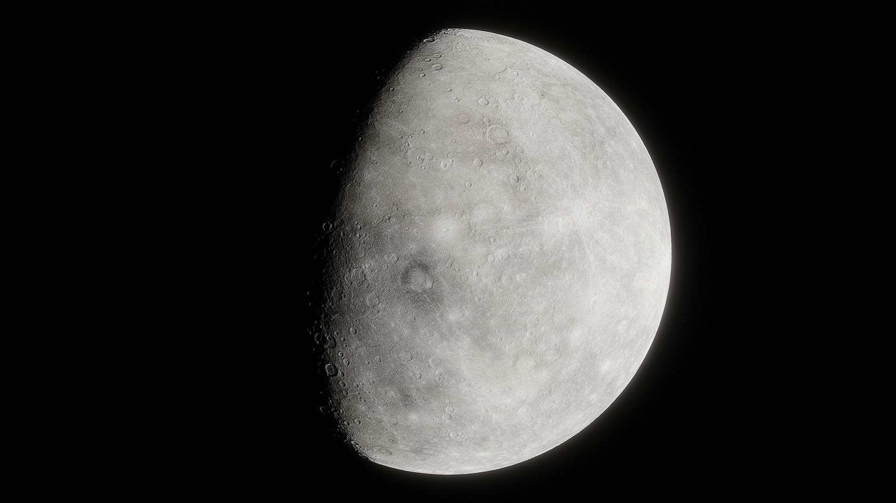
The Messenger of the Sun
Characteristics
- Planet Type
- Rocky Planet
- Mass
- 3.285×1023 kg
- Radius
- 2 439.7 km
- Density
- 5 427 kg/m3
- Surface Gravity
- 3.7 m/s2
- Distance from Sun
- 57.91 million km
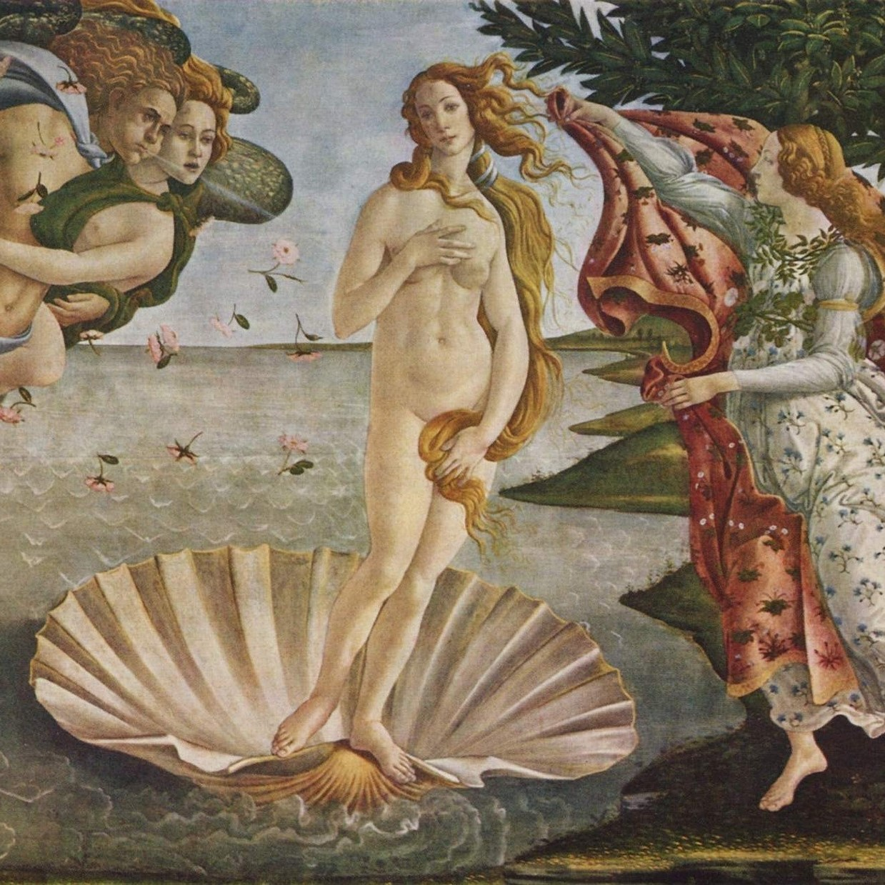
Earth's Attractive Evil Twin
Venus
The planet Venus has been known since prehistoric times because it is very bright and perhaps because of its splendor
it took its name from the goddess of love and beauty. It can be easily seen with the naked eye: at its peak it is 12 times brighter
than Sirius, the brightest star in our sky. The reason it is so bright is due to the dense atmosphere, rich in carbon dioxide,
that reflects the sun's rays very well. Always linked to this, the ground temperature is also higher than that of Mercury,
despite being further away from the Sun.

Earth's Attractive Evil Twin
Characteristics
- Planet Type
- Rocky Planet
- Mass
- 4.8675×1024 kg
- Radius
- 6 051.8 km
- Density
- 5 243 kg/m3
- Surface Gravity
- 8.87 m/s2
- Distance from Sun
- 108.92 million km
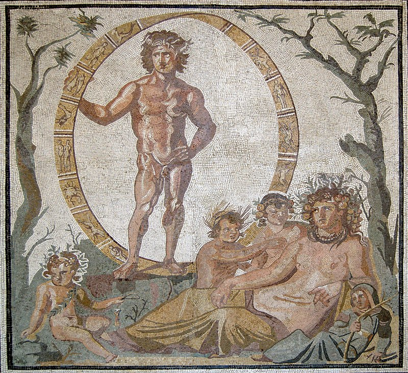
The Blue Planet
Earth
To our knowledge, the Earth appears to be the only planet that hosts forms of life as we understand it, based on carbon.
This is thanks to its particular characteristics, such as the atmospheric composition and the specific distance from the Sun.
These characteristics make Earth the only planet capable of sustaining liquid surface water. About 71% of Earth's Surface is made up of water.
It is the first planet in the solar system to host a natural satellite: the Moon.

The Blue Planet
Characteristics
- Planet Type
- Rocky Planet
- Mass
- 5.97237×1024 kg
- Radius
- 6 371 km
- Density
- 5 514 kg/m3
- Surface Gravity
- 9.81 m/s2
- Distance from Sun
- 1 AU (≈ 150 million km)
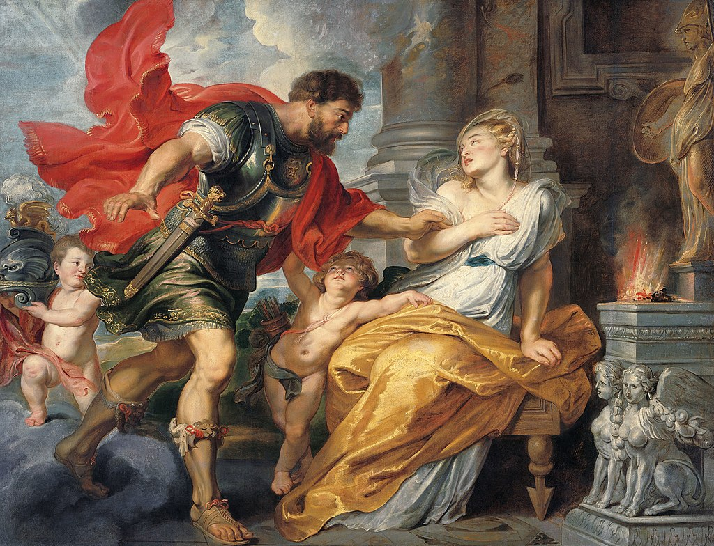
The Red Planet
Mars
Mars is called the "red planet" due to the presence of iron oxides, which create an atmosphere characterized by
dust storms of that color. Associating that scarlet color with blood, the Romans named it after their God of War, Mars.
In truth the Romans copied the greeks, who in their turn named the planet after their God of War, Ares.
Here is Mount Olympus, a gigantic volcano 27 km high, the highest in the Solar System. Mars has two satellites, Phobos and Deimos.
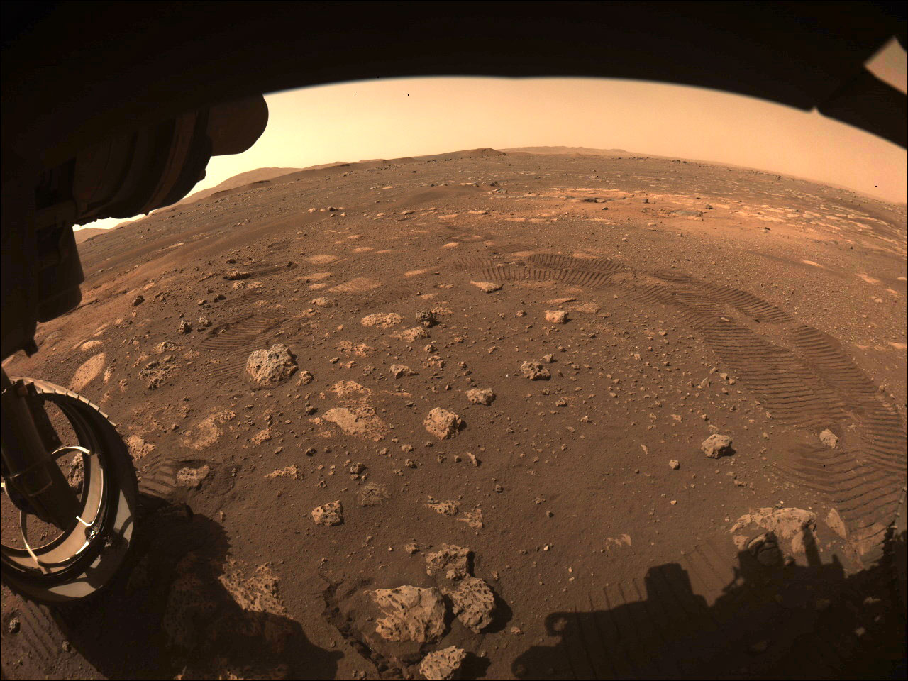
The Red Planet
Characteristics
- Planet Type
- Rocky Planet
- Mass
- 6.4171×1024 kg
- Radius
- 3 389.5 km
- Density
- 3 933.5 kg/m3
- Surface Gravity
- 3.72 m/s2
- Distance from Sun
- 208.71 million km
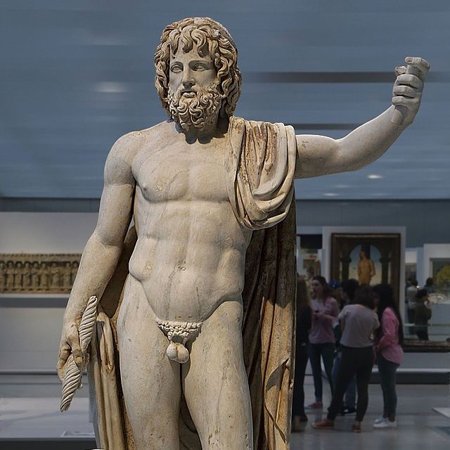
The King of the Solar System
Jupiter
Jupiter is so large that if it had had an even higher mass (at least 90 times) it would have presented the favorable
conditions to initiate nuclear reactions within it, becoming a star. At sight it presents "bands", corresponding to areas
of the atmosphere, composed mainly of hydrogen and helium, with different rotation speeds and compositions.
Jupiter has the great red spot, which is a huge cyclone that persists in a certain area of the atmosphere.
It has many moons, currently there are at least 67, including the 4 Medicean satellites Io, Europa, Ganymede and Callisto,
discovered by Galileo.
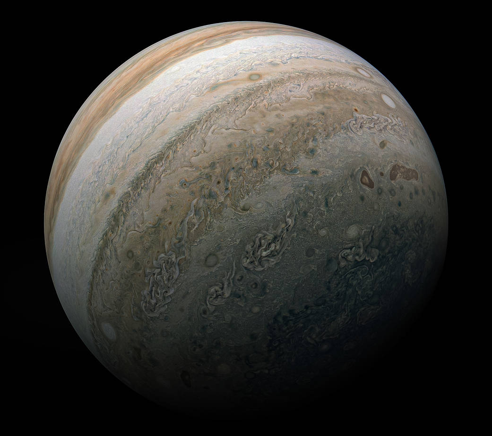
The King of the Solar System
Characteristics
- Planet Type
- Gas Giant
- Mass
- 1.8982×1027 kg
- Radius
- 69 911 km
- Density
- 1 326 kg/m3
- Surface Gravity
- 24.79 m/s2
- Distance from Sun
- 778 million km
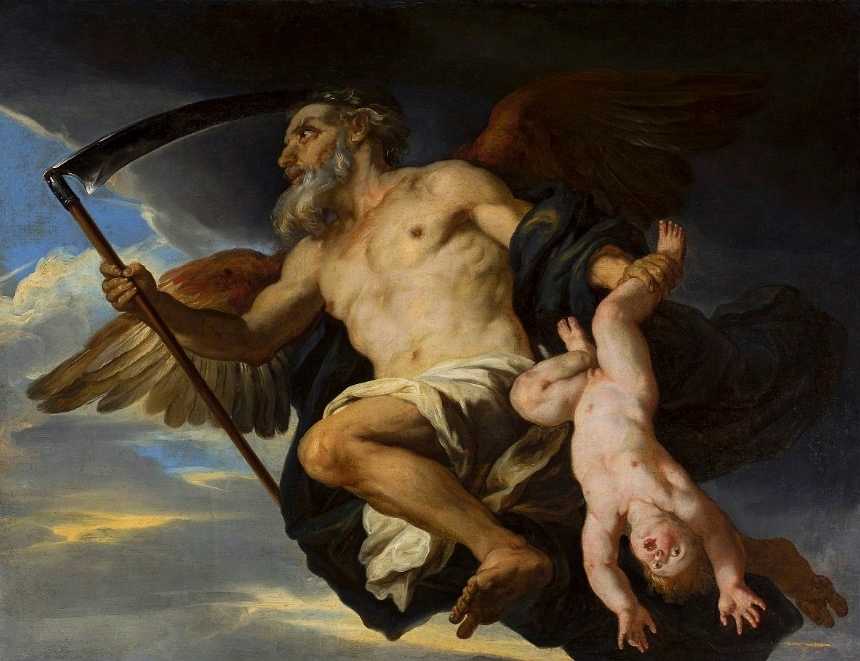
The True Lord of the Rings
Saturn
It was Galileo Galilei who noticed the strange shape of the Gas Giant for the first time in 1610. During the first observations,
the astronomer from Pisa was unable to completely reconstruct the figure of the planet due to its rings, defining it as
composed of three bodies. However, the discovery of something is not usually related to a single individual: it was
Eustachio Divini, in 1649, who showed everyone for the first time a detailed illustration of Saturn's rings and later
Christiaan Huygens, in 1655, was the the first to guess the annular shape of the bodies seen by Galileo around the planet.
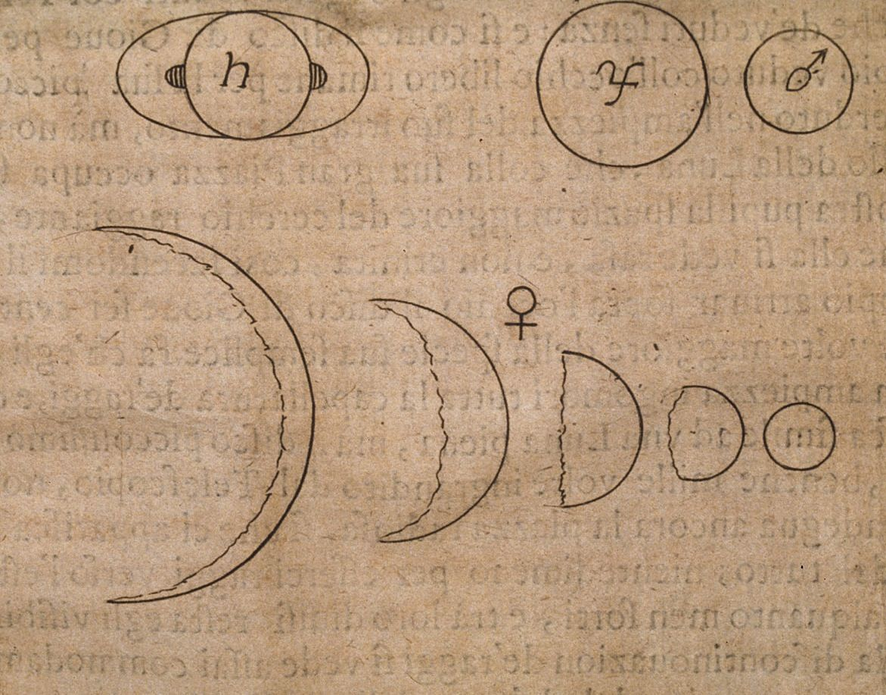
The True Lord of the Rings
Characteristics
- Planet Type
- Gas Giant
- Mass
- 5.6834×1026 kg
- Radius
- 58 232 km
- Density
- 687 kg/m3
- Surface Gravity
- 10.44 m/s2
- Distance from Sun
- 1.477 billion km
The Bull's Eye Planet
Uranus
Uranus is not observable with the naked eye. First planet "seen" through a telescope, it was discovered only on March 13, 1781
by William Herschel. It is large in size (51,118 km in equatorial diameter). It has the peculiarity of having an axis of
rotation almost parallel to the plane of the orbit, as the axial inclination is about 98 °. In addition to a series of rings,
Uranus has 27 moons, named after characters from Shakespeare and Pope. The most interesting part is that its moons and rings
also rotate vertically in the orbital plane. The temperature of its atmosphere reaches -224 ° C.
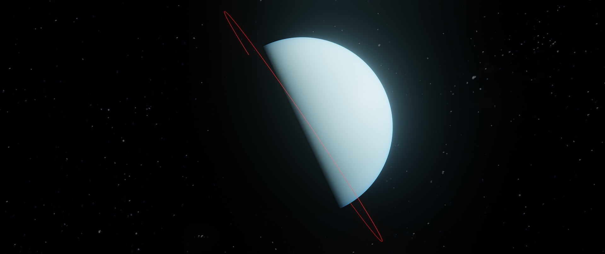
The Bull's Eye Planet
Characteristics
- Planet Type
- Ice Giant
- Mass
- 8.6810×1025 kg
- Radius
- 25 326 km
- Density
- 1 270 kg/m3
- Surface Gravity
- 8.69 m/s2
- Distance from Sun
- 2.947 billion km
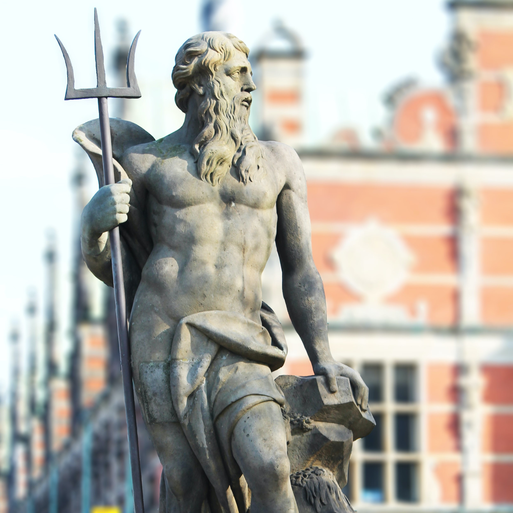
The Big Blue Planet
Neptune
Neptune is the planet with the outermost orbit. The high distance from the sun means that the temperatures at its surface
are very low: its atmosphere reaches -218 ° C. For this reason, and due to its size, it is called the "frozen giant".
It has an atmosphere of hydrogen and helium. 13 satellites rotate around the planet, the best known of which is Triton.
Together with Uranus these planets were not visible to the naked eye, so they were only recently discovered but their
names were still attributed to the Roman gods like all the others, in this case that of the sea.

The Big Blue Planet
Characteristics
- Planet Type
- Ice Giant
- Mass
- 1.02413×1026 kg
- Radius
- 24 622 km
- Density
- 1 638 kg/m3
- Surface Gravity
- 11.15 m/s2
- Distance from Sun
- 4.474 billion km